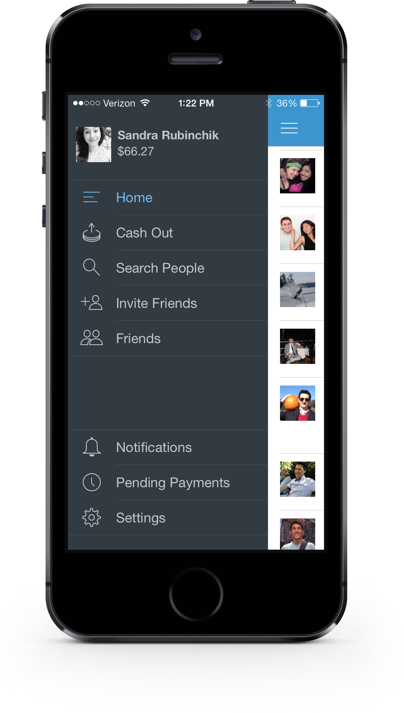
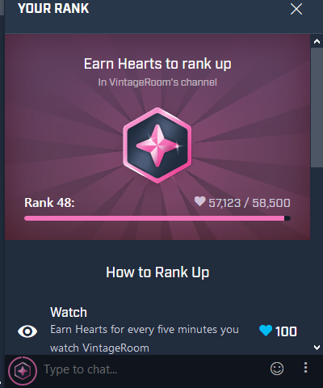
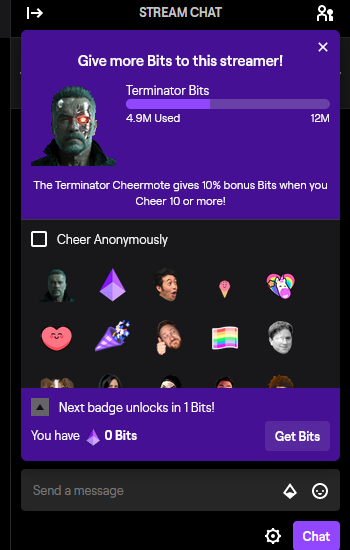
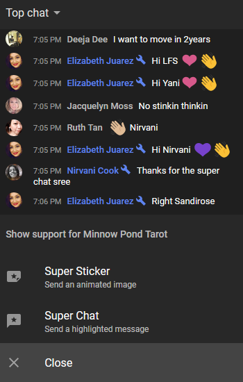
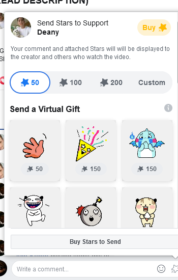

A Code Journal for
Hub Pages
View the Code Journal on GitHub
Repositories and latest Contribution Activity
A Code Journal for
Hub Pages
View the Code Journal on GitHub
Last updated on October 6th, 2019
Live streaming is media simultaneously recorded and broadcast in real time or media delivered and played back simultaneously without requiring a completely downloaded file. Non-live media such as video-on-demand, vlogs, and YouTube videos are technically streamed, but not live streamed.
User interaction via chat rooms are a major component of live streaming. Platforms often include the ability to talk to the broadcaster or participate in conversations in chat. In this case chat refers to a communication over the Internet real-time of text messages from sender to receiver. Primarily any direct text-based or video-based, one-to-any chat, using tools such as instant messengers, Internet Relay Chat (IRC) or any online service with users in a multi-user environment.
In the case of Mixer and Twitch, users can send a private chat messager to other users via the whisper feature. Youtube has no whisper feature but Facebook has its own messenger application. Chat messages are generally short in order to enable other participants to respond quickly. Another common chat related feature are emotes to express emotion, particularly when you're chatting in a livestream.
David M. Ewalt referred to Twitch.tv as "the ESPN of video games". The website spawned from and grew to overshadow Justin.tv, and was purchased by Amazon.com at the end of 2014 for $970 million USD. Other video-game oriented streaming websites include Smashcast.tv, which was formed after the merging of Azubu and Hitbox.tv, and the South Korea-based afreecaTV. In 2015, YouTube launched YouTube Gaming—a video gaming-oriented sub-site and app that is intended to compete with Twitch.
An example of a notable live streamed event is Games Done Quick, a charity speedrunning marathon hosted on Twitch. Viewers are encouraged to donate for incentives during the stream such as naming characters in a run, having the runners attempt more difficult challenges, or winning prizes. Over $10 million has been raised across sixteen marathons.
Professional streamers can generate livable revenue from viewer subscriptions and donations, as well as platform advertisements and sponsorships from eSports organizations, often earning much more from streaming than from tournament winnings. The audiences of professional gaming tournaments are primarily live stream viewers in addition to live audiences inside venues. The International 2017, a Dota 2 tournament with the largest prize pool in eSport history, was primarily streamed through Twitch, having a peak of over five million concurrent viewers.
With live streaming becoming a financially viable market, particularly for esports, streamers and organizations representing them have looked for metrics to quantify the viewership of streams as to be able to determine pricing for advertisers. Metrics like maximum number of concurrent viewers, or number of subscribers do not readily account for how long a viewer may stay to watch a stream.The most common metric is the "Average Minute Audience" (AMA), which is obtained by taking the total minutes watched by all viewers on the stream during the streamed event and for 24 hours afterwards, divided by the number of minutes that were broadcast.
The AMA is comparable to the same metric that the Nielsen ratings for tracking viewership. This also makes it possible to combine standard broadcast and streaming routes for events that are simulcasted on both forms of delivery to estimate total audience size Major events with reported AMA include streamed National Football League games; for example, the average AMA for NFL games in 2018 ranged from 240,000 to 500,000 across streaming services, with the following Super Bowl LIV having an AMA of 2.6 million. In comparison, the esports Overwatch League had an average of 313,000 average minute audience during regular season games in its 2019 season.
User interaction via chat rooms forms a major component of live streaming. Platforms often include the ability to talk to the broadcaster or participate in conversations in chat. The idea is to use social media to gain website traffic or attention through sites creating content that you have tailored to the context of each individual platform in order to drive user engagement and sharing.
Live stream services encompass a wide variety of topics, from social media to video games to professional sports. Platforms such as Facebook Live, Periscope, Kuaishou, and 17 include the streaming of scheduled promotions and celebrity events as well as streaming between users, as in videotelephony. Sites such as Twitch.tv have become popular outlets for watching people play video games, such as in eSports, Let's Play-style gaming, or speedrunning. Live coverage of sporting events is a common application.
To publish and record live streams at the same time include MotionCaster, Open Broadcaster Software, Wirecast, and XSplit Broadcaster. They are used to publish streams to Youtube, Facebook, Periscope and Twitch.tv, among others.
I don't like to participate in channels that have large communities. The chat is usually to fast and in slow mode so the communication in the community chat during the stream is confusing. I love the ability to show dedication to a channel thanks to stuff like channel progression and badges. I typically watch every streaming platform! Youtube, Twitch, Mixer, Facebook, and others depending on what I am looking for. I often find my self looking for strategy's to beat something in a game, no commentary walkthrough's and game movies, original sound tracks, cheat codes for retro games, art work, leaderboards, and locations.
I have never wanted to stream. I like to watch them but I never wanted to do it because I don't think I would be very interesting. Programming on a Live Stream and getting worked up to role play when I play a game would just make no sense to anyone but me. I have worked behind the scenes on some streams but no I don't think its for me. I do make technology specifically for streaming so I will have to live stream.
https://www.youtube.com/user/keeyanajonesMixer is where viewers and streamers come together in new ways. See the hottest games in action, share your own gaming adventures, and join in for amazing fun.
When MixPlay is enabled, anything can happen. On Mixer, streamers and viewers are more connected than ever before. Tune in to vote on dialogue and decisions, help or challenge streamers in their games, and even summon mobs in Minecraft. Or use MixPlay to enhance streams with overlays, stats, and other useful information.
In the case of Mixer, users can also use 'sparks' one of two on site currencies (embers is the other) to purchase 'skills'. Skills are large and animated emotes to post in the channels chat. You can also use commands in the chat like '/mute @username' in the chat to mute other users.
You rank up by participating in that channel. To find out how you can gain more hearts, click the icon to the left of the chat input box. Hearts are experience points for the channel. The more you get, the more you'll rank up! Currently the channel owner can set the max rank but the default is 99.
Channel Progression is a per channel ranking system that allows you to show your dedication to that channel! You can rank up by interacting in a channel and get a fancy badge next to your name as you progress.
There is currently no way to turn off Channel Progression from the channel side or user's end. All channels on Mixer have Channel Progression enabled and rank is earned hearts while using Mixer on any platform. The owners can manually grant hearts to and remove hearts from my viewers.
Channel progression lets you rank up in a stream by “watching”, “chatting”, “following”, “subscribing” and more. The typical progression:
You can also see your rank by clicking the “Your Rank” button at the bottom left hand corner of the chat box. Mixer Partners are able to reward additional monetization actions like “subscribing”, gift subscriptions and Embers spend. Since this is an early version of the experience, they want to hear feedback and ideas. Finally, channel viewers and the public can read the channels chat when the live stream is off line.
Please check the methods.md file.
Twitch is a global community of millions who come together each day to create their own entertainment: unique, live, unpredictable, never-to-be repeated experiences created by the magical interactions of the many. With chat built into every stream, you don’t just watch on Twitch, you’re a part of the show.
Twitch Extensions enable you to create live apps that interact with the stream, as a panel on a channel, or with chat. Create interactive experiences such as mini-games, leaderboards, live gear information and more.
NOTE: Broadcasters can activate up to 6 extensions at a time 3 panel, 1 video overlay (full screen), and 2 video component (smaller).
Twitch offers an Internet Relay Chat (IRC) interface for chat functionality. Chatbots allow you to programmatically interact with a Twitch chat feed using IRC standards; the bot connects to the Twitch IRC network as a client to perform these actions.
In the case of Twitch, users can view and create clips, use 'bits' its on site currency to 'cheer'. You can buy bits on Twitch that show support for streamers, get attention in chat through animated emoticons, get recognition through badges, leaderboards, and acknowledgement from the streamer, and even unlock loot during special esports events like Overwatch League Cheering. Bits also allow you to chat in Sub Only chat rooms. Cheering with Bits celebrates the moments you love with the community, all right in chat. A Cheer is a chat message that uses Bits.
Bits emotes can be used one by one, all at once, or anywhere in between. Using many at once shows more support and creates cooler animated emotes. Cheering shows your support for the Partner or Affiliate just like subscriptions do, and as you Cheer in a channel, you earn Cheer Chat Badges for that channel so that your support is recognized. Your Cheer Chat Badge lasts indefinitely but will only appear in the channel where you earned it.
Cheering is now available to Twitch channels worldwide, so all Twitch Partners and Affiliates regardless of where they live can enable Cheering on their channels. Cheer settings are located in the Dashboard -> Affiliate / Partner Settings -> Bits & Cheering. We are actively working on local payment methods and currencies to support global audiences, but currently Bits may be purchased via Amazon and PayPal payments. It should be noted that international transaction fees may apply in addition to the price of Bits. Finally, channel viewers and the public can read the channels chat when the live stream is off line in the chat replay.
Please check the methods.md file.
Integrate YouTube videos and functionality into your website or application.
The YouTube Live Streaming API lets you create, update, and manage live events on YouTube. Using the API, you can schedule events (broadcasts) and associate them with video streams, which represent the actual broadcast content.
The Live Streaming API is actually comprised of components of the YouTube Data API and the YouTube Content ID API. The Data API enables YouTube users to manage their YouTube accounts, while the YouTube Content ID API enables interactions with YouTube's rights management system. However, all of the resources that make up the Live Streaming API are used only to create and manage live events.
In the case of Youtube, users can also chat with an extensive library of emoji's and emotes. Emoji's can also be customized to a specific skintone.
On youtube you show support for the channel via donations:
Users can also go to other viewers channels, report messages, or block other users. Finally, channel viewers and the public can read the channels chat when the live stream is off line in the chat replay.
Please check the methods.md file.
All-in-one voice and text chat for gamers that's free, secure, and works on both your desktop and phone.
In the case of Discord, users can communicate voice and text, post gifs, gift subscriptions, upload files, and a huge number of emoji's.

Please check the methods.md file.
The Live Video API enables video encoders, cameras, web, and desktop applications to stream live video directly to Facebook user profiles, pages, and groups. As long as your app can produce a live RTMPS stream, you can stream to Facebook using the Live Video API.
In the case of Facebook, one of the most interesting of all the steaming platforms I worked with. The typical six reaction icons like, love, laugh, wow, sad, and angry are selected by the viewer and displayed on the stream as an animation. In addition, the viewers get distinctive badges for supporting the channel, being a top contributor, watching often, or becoming a follower.
On facebook you show support for the channel via donations with 'stars':
When you become a supporter of the channel you get a badge, access to exclusive content, discounts, and live videos. Users can also report messages, or block other users. Finally, channel viewers and the public can read the channels chat when the live stream is off line in the chat replay.
Please check the methods.md file.
See Experiments for more.
← PREVIOUS: Learning Plan NEXT: Games →